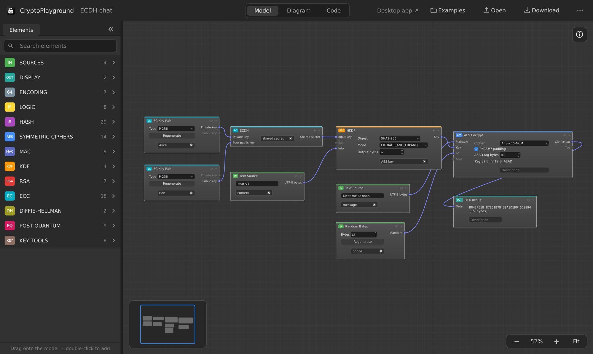
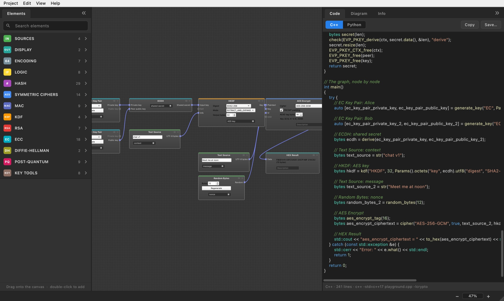
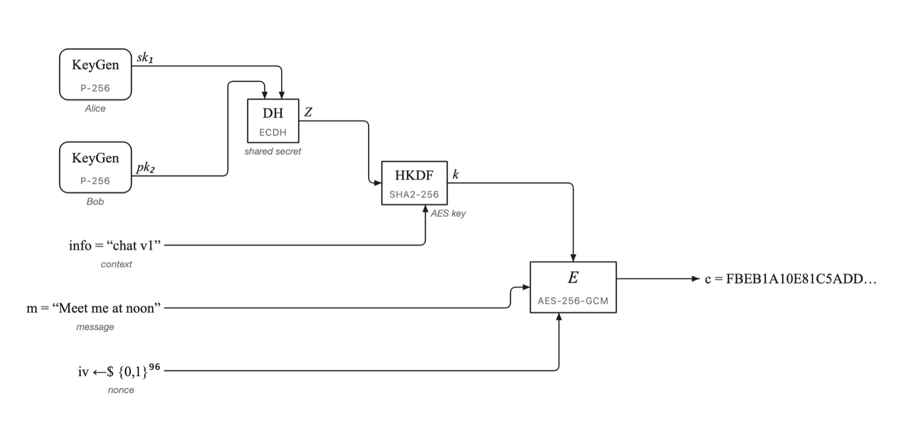
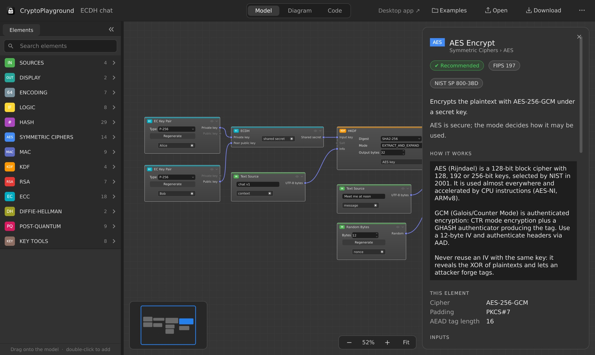

Hash
29SHA-1, SHA-2, SHA-3, SHAKE, BLAKE2, RIPEMD-160, SM3, MD5 and more.
Build cryptography by drawing it. Drag hashes, ciphers, signatures and key exchanges onto a canvas, connect them, and watch every value update instantly.

Each element is a real operation — a hash, a cipher, a signature, a key exchange. The output of one becomes the input of the next. Change a byte anywhere and everything downstream is recalculated at once.

The Diagram view redraws your graph in the notation of cryptography papers and textbooks: E, H, KeyGen, ⊕ and ‖, keys from the top, IVs and salts from below. Arrange boxes and lines by hand, add notes, leave helper steps out, and export as PNG or SVG.

The Code view turns the graph into a complete program — in C++, or in Python with
the cryptography package. Copy it into your project: it compiles, runs and produces the same results
as the app.
# ECDH: shared secret ecdh = load_private_key(alice_private).exchange( ec.ECDH(), load_public_key(bob_public)) # HKDF: AES key key = HKDF(algorithm=hashes.SHA256(), length=32, salt=None, info="chat v1".encode()).derive(ecdh) # AES Encrypt nonce = os.urandom(12) ctx = Cipher(algorithms.AES(key), modes.GCM(nonce)).encryptor() ciphertext = ctx.update(b"Meet me at noon") + ctx.finalize()
Select an element and the Info panel tells you what it does, what each input means and why it is needed, which standards define it, and what to watch out for — like never reusing a GCM nonce.

Organized by technology, searchable, and dragged onto the canvas from the Elements panel.
SHA-1, SHA-2, SHA-3, SHAKE, BLAKE2, RIPEMD-160, SM3, MD5 and more.
AES (GCM, CBC, CTR, …), ChaCha20-Poly1305, ARIA, Camellia, SM4, DES and legacy ciphers.
HMAC, CMAC, GMAC, KMAC, Poly1305, SipHash, BLAKE2 MAC.
HKDF, PBKDF2, scrypt and Argon2.
Key pairs, PKCS #1 v1.5 and PSS signatures, OAEP encryption, RSA KEM.
ECDSA, EdDSA (Ed25519, Ed448), ECDH, X25519 / X448, DHKEM, SM2.
ML-KEM (Kyber), ML-DSA (Dilithium) and SLH-DSA (SPHINCS+).
Finite-field key pairs and key agreement.
Convert keys between formats, extract raw bytes, inspect details, PKCS #12 export and import.
Base64, hex, concatenate, XOR and slice.
Equals, not equals, greater / less than, not, if / else.
Text, hex, random bytes and your own private keys in; hex and text results out.
Paste a key from a test vector or a .pem file, convert between structures, and save any output to a file.
On macOS, open the disk image and drag CryptoPlayground to your Applications folder. On Windows, run the installer. Or use it in your browser: it is the same app, and projects are saved as downloads.